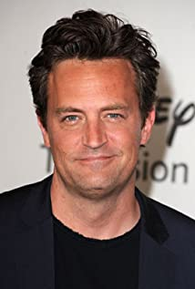
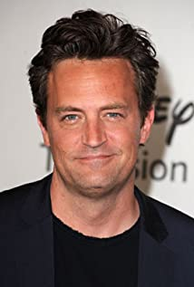

Friends is an American television sitcom, created by David Crane and Marta Kauffman, which aired on NBC from September 22, 1994, to May 6, 2004, lasting ten seasons. With an ensemble cast starring Jennifer Aniston, Courteney Cox, Lisa Kudrow, Matt LeBlanc, Matthew Perry and David Schwimmer, the show revolves around six friends in their 20s and 30s who live in Manhattan, New York City. The series was produced by Bright/Kauffman/Crane Productions, in association with Warner Bros. Television. The original executive producers were Kevin S. Bright, Kauffman, and Crane.
Rachel Monica
Monica
 Phoebe
Phoebe
 Chandler

Joey
Chandler

Joey
 Ross
Ross
 Write to Friends Cast
Full Name, Country, Username
Write to Friends Cast
Full Name, Country, Username